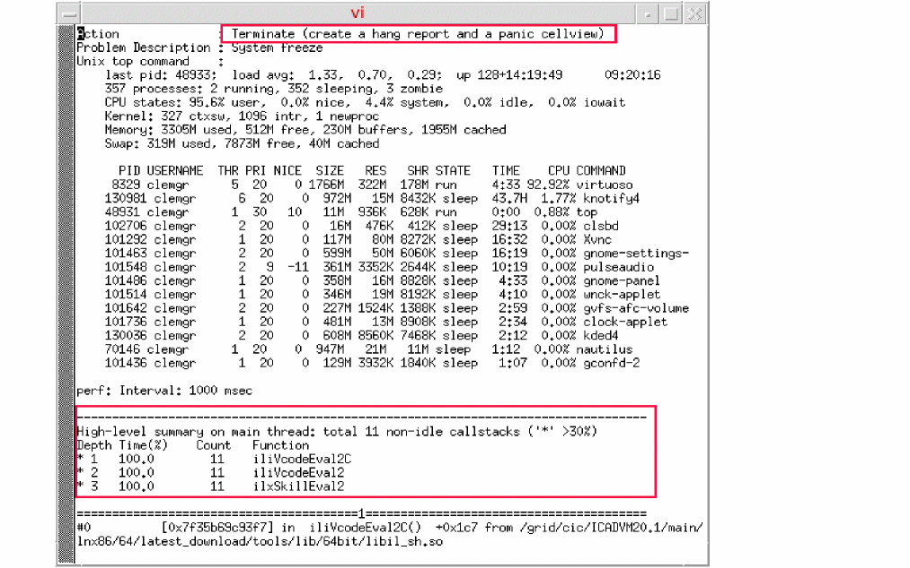

Troubleshooting an Unresponsive Virtuoso Application
To troubleshoot a sample application unresponsive:
-
Run the following SKILL loop command from CIW to make the application unresponsive:
while(t nil)
- In the Health Monitor form, click Start Recording.
- After recording for some time, click Stop Recording.
-
Click Terminate Virtuoso.
The Terminate Virtuoso form appears. - To break the SKILL loop, click the Send CTRL+C button to interrupt the application causing the issue.
- Repeat step 1 to freeze the tool again.
- Click Terminate Virtuoso.
-
Specify the reason for exiting Virtuoso (for example, describe how you run into this issue) and then click Terminate.
10 seconds of callstacks are collected and the Virtuoso session is terminated. In some cases, a hang report is also generated.

You can conduct a thorough check of the design library access time with multiple pings to each library server to assess the average and worst case times. Depending on the number of libraries in the cds.lib file, this test might take several minutes.
- To perform this test, in CIW, choose Tools – Diagnostic Center.
- In the Performance tab, select Check – Library.
This option opens a terminal window with information about the current library. The results are shown in a viewer and are logged at .cadence/perf/$HOST_$USER_$PID_checkLibrary_$time
The same functionality is supported in Library Manager – Help – Diagnostics.
Checking the Profiler Summary
To view profiler summary in CIW:
- Choose Tools – Diagnostic Center.
-
In the Performance tab, select Check – SKILL – Profiler Summary.
The Select a SKILL Profiler Summary Report form is displayed. -
Select a saved profiler result file.
The results are displayed in a tree view.
Controlling the SKILL Replay
Interactively play a replay file from a cdsmps control console. Type h to see all commands, including setting a breakpoint to stop the replay or a starting line number. This is particularly useful to narrow down a reproducible test case from a large replay file.
- To start, in CIW choose Tools – Diagnostic Center.
- In the Performance tab, select Check – SKILL – Replay. Then follow the instructions in CIW.
Related Topics
Additional Crash Data Collection
Return to top